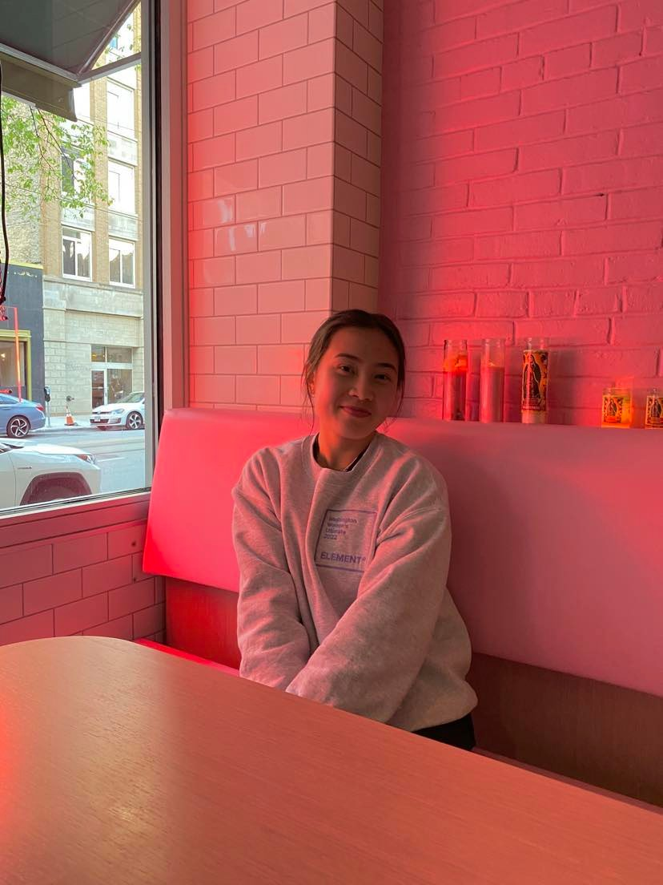

I am Kelly

Hi, I’m Kelly Tong, a UX/Product Designer in Seattle who loves turning complex problems into intuitive, human-centered experiences. I studied Human-Centered Design & Engineering at the University of Washington, and I’m most curious about how people interact with technology, and how understanding their behavior and context leads to better product decisions.
I enjoy the full design process, from research and synthesis to prototyping and usability testing. My favorite part is watching real people use my designs, because their reactions often challenge my assumptions and make the final product better.
I work best on collaborative teams where ideas are shared early and iterated on often, and I see feedback as a core part of building better products. I’m currently looking for Product Designer roles where I can keep growing through real-world challenges.
Outside of design, I enjoy playing volleyball and baking.
Let's connect! You can reach me at my email: tongkelly01@gmail.com or on LinkedIn